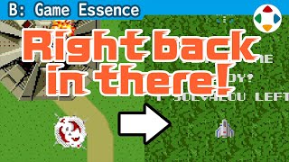
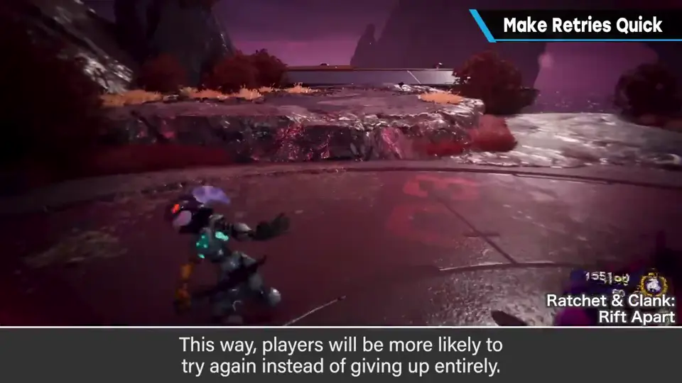
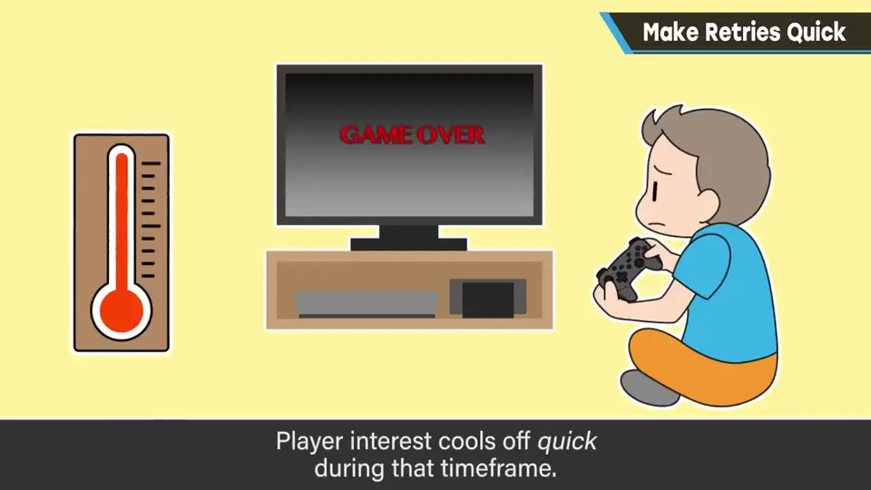
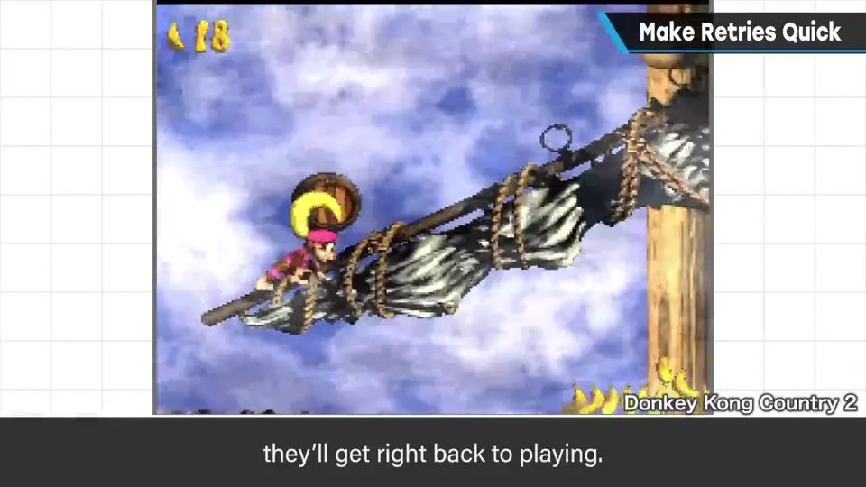
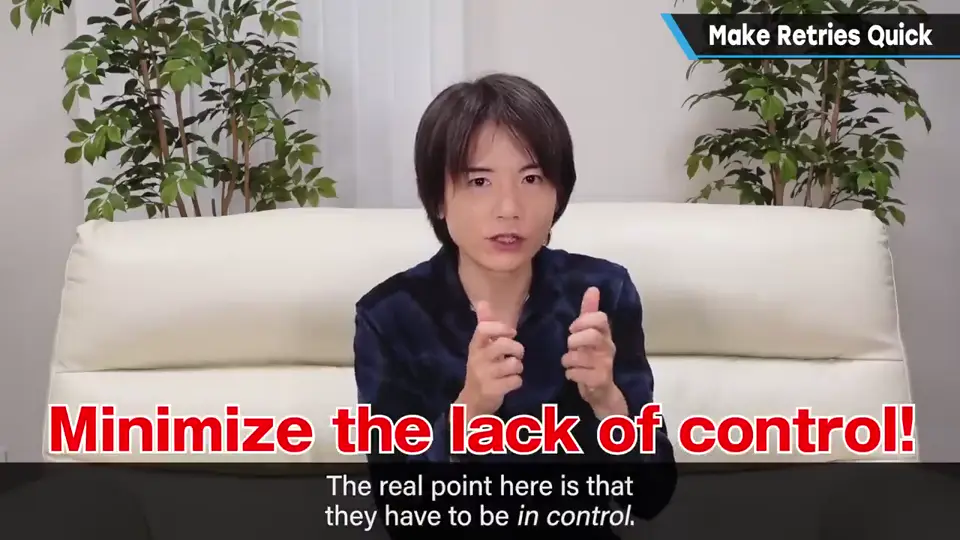
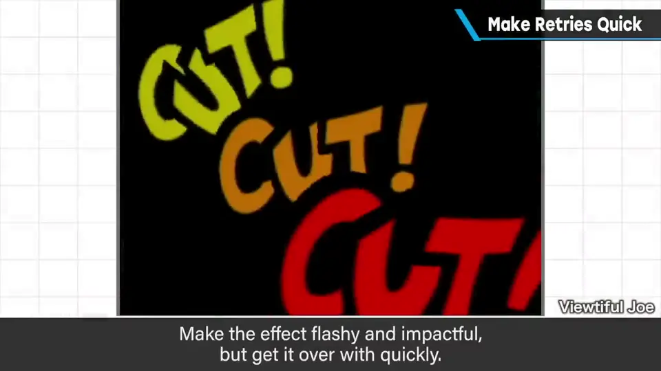
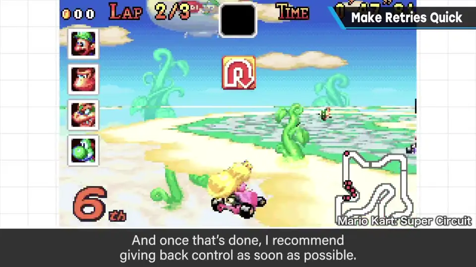

速览
视游戏性与目标而定，但失误后的重开要尽可能迅速，这样玩家不放弃、再挑战的可能性就会增加。尽量压缩不给玩家任何情绪的时间：演出要短，读取尽量短。重试时有多大惩罚、要重来多少也是因素之一，但迅速重开更重要——它能提高玩家对难度和困难的容忍度。「被打了／不行了」之后、到冷静下来能再次操作之前，是玩家急速冷却的时间，拖得越久越冷。在冷却前把操作的接力棒交给玩家，玩家就会先动起来，往前走一点又会有干劲。关键是「能操作」，不是游戏单纯动起来；哪怕只能翻消息也好，但游戏产生反应的时间越早越好。不过，如果原地无限复活让人觉得不用动脑就能通关也不行，要拿捏分寸：失败时要让人感到「被打了」，用1 秒到数秒的华丽演出干脆地表现，之后尽快让玩家能操作。还要避免复活后马上被敌人袭击——没碰手柄就一直被打倒，会讨厌操作。理解原理，再瞄准合适的规格。
1. 重开要尽可能快 0:03
视游戏性和目标而定，但失误后让玩家重试时，重开要尽可能迅速。这样玩家不放弃、再挑战的可能性会增加。
- 尽量减少不给玩家任何情绪的时间：演出精简，读取也尽量短。
- 重试时有多大惩罚、要重来多少，也是是否放弃的因素；但更大的要素是迅速重开——它能提高玩家对难度与困难的容忍度。

2. 玩家正在急速冷却 0:53
从「被打了，不行了」的瞬间，到冷静下来、能再次在游戏中操作为止——这段时间玩家会急速冷却，拖得越久越冷。


如果在冷却之前把操作的接力棒交给玩家，玩家就会先开始操作；往前走一点，又会生出下一次的干劲。
关键不是「游戏单纯动起来」，而是玩家能操作。哪怕只能翻页消息也行，但越早让游戏产生反应越好。

3. 拿捏分寸 1:42
- 但如果原地复活能无限进行，让人觉得不用想也能通关，那也不行——要拿捏分寸。
- 被打倒时要让人确实感到「被打了」：演出短时间、华丽而干脆，视类型而定，1 秒或数秒即可，然后尽快能操作。
- 避免复活后马上被敌人袭击：如果难度高、连手柄都没碰就一直被打倒，玩家会连操作都讨厌。


也取决于游戏目标和惩罚大小——理解原理，再瞄准合适的规格。
自测题
1. 为什么失误后要尽快重开？
从失败到能再次操作之间，玩家会迅速冷却；尽快交还操作权能让玩家不放弃、再挑战，也提高对难度的容忍度。 0:53
2. 樱井说关键是「能操作」，而不是什么？
不是游戏单纯动起来；要让玩家能操作（哪怕只是翻消息），越早有反应越好。 1:24
3. 快速重开时要注意哪些分寸？
别让无限原地复活变成不用动脑；失败要用 1 秒～数秒的华丽演出明确表现；避免复活后立刻被敌人袭击。 1:42